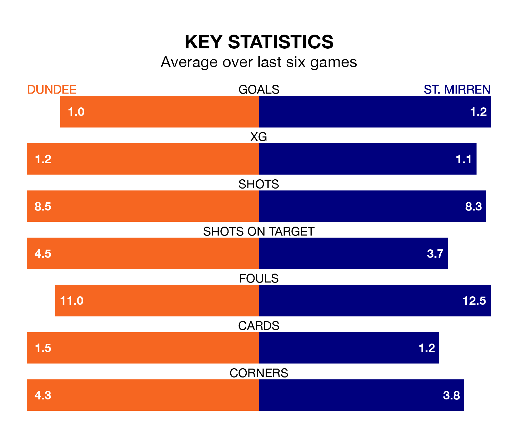

St. Mirren make the journey to the Scot Foam Stadium at Dens Park to play Dundee on Saturday looking to pick up points to end their three-game losing streak.
St. Mirren's struggles have left them with just four points from their last six Premiership matches, while their opponents have earned eight from a possible 18.
In the last 10 years, Dundee and St. Mirren have played each other on 15 occasions. Dundee won four of them, St. Mirren eight, and they drew three times.
On average, the Dees scored 1.1 goals and the Buddies 1.4 in those matches.
Their last meeting was on February 7, when St. Mirren won 2-0 at home.
With 39 goals in 34 games so far this season, St. Mirren are scoring at below the league average rate with 1.1 goals per game. And they are conceding at an average rate, letting in 45 goals at a rate of 1.3 per game.
Dundee, meanwhile, are average scorers, with 1.3 goals per game. They have conceded 1.6 goals per game.
In Zachary Hemming, the Buddies can rely on one of the league's safest pair of hands. He has kept 10 clean sheets in his 34 appearances this season in the Premiership.
In the Dees's net, Trevor Carson has eight clean sheets in 25 games. He has conceded a goal every 56 minutes, 30% more often than the 73 minutes between goals for Hemming.
The away side are fifth in the table after 34 games, of which they have won 12 and drawn seven, earning 43 points.
The hosts are two places behind St. Mirren in seventh, with 10 wins and 11 draws putting them on 41 points.
Dundee's last match was on Sunday, a 2-1 loss against Celtic, with Juan Antonio Portales Villarreal getting the goal for the Dees.
St. Mirren lost 2-1 against Rangers last time out, also on Sunday, with Mikael Mandron on the scoresheet.
Updated: 12:00 (UTC), 02/05/24